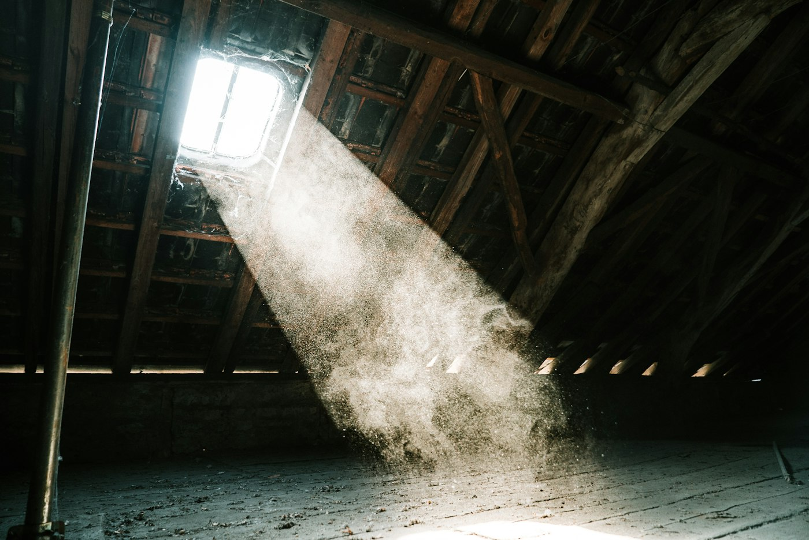

Huerkamp Home Group
Free guide
How to choose an inspector, what to test for in Minnesota, and how to turn a report into a fair request.
Free guide for Twin Cities home buyers
The home inspection is your best chance to learn what you are really buying. It also sets up the most important negotiation after the price.
This guide covers choosing an inspector, the add-on tests that matter in Minnesota, and how to respond to what the report finds. Questions? Call or text us at (612) 502-7653.
Before the inspection
Minnesota doesn't license home inspectors, so ask about experience, professional association membership, insurance and a sample report. A clear report with photos is worth more than a cheap one.
Your purchase agreement sets how many days you have to inspect and respond. Book the inspector as soon as your offer is accepted so you have time for add-on tests and quotes.
Go through the seller's disclosure, the well, septic and radon disclosures and any city time-of-sale report before the inspection, and give your inspector the list of things to look at closely.
What to test in Minnesota
The Minnesota Department of Health estimates about 2 in 5 Minnesota homes have radon levels that pose a significant health risk. A test during your inspection period is the only way to know.
In older neighborhoods, roots and aging pipes are common in the line from the house to the street, which is usually the owner's to repair. A camera scope shows its condition.
For homes on a private well, test for bacteria and nitrate at a minimum, and ask about arsenic. For a septic system, check whether the county requires a compliance inspection and ask for pumping records.
Some stucco homes can hide water damage behind the surface. If the home has stucco, ask an inspector who specializes in it whether moisture testing is recommended.
For homes built before 1978, federal law gives buyers the chance to test for lead-based paint hazards. It matters most for homes with young children or planned renovations.
During the inspection
Walk the home with the inspector. Ask what is a safety issue, what is a repair to plan for soon and what is normal wear. Learn where the water shut-off, gas shut-off and electrical panel are.
Roof, foundation, drainage, furnace, air conditioning, water heater, electrical panel and windows are the expensive items. Ask the inspector to estimate each one's age.
Ask about attic insulation and ventilation, signs of past ice dams, gutters and downspouts, and how water drains away from the foundation in spring.
After the report
Group the report into safety issues, major defects, items to repair soon and routine maintenance. Most reports are long; only the first two usually belong in a request to the seller.
If the roof, furnace or foundation needs work, get a contractor's quote before you negotiate. A real number makes your request specific and fair.
Sellers may repair, give a credit at closing or lower the price. A credit or price change lets you choose your own contractor; repairs by the seller should be done by licensed contractors with receipts.
If you find a serious problem the seller won't address, your inspection contingency may let you cancel by the deadline. Follow the purchase agreement's notice rules exactly.
Ready when you are
Huerkamp Home Group has helped buyers and sellers across the Twin Cities since 2002, and has been a Dave Ramsey Endorsed Local Provider for more than 15 years.
Sources
Photos: Mika Baumeister (cover), GN Group and Toolmash Expo on Unsplash. General information, not legal, tax or lending advice. Rules and programs change; confirm details with your lender, title company, tax adviser or attorney. Huerkamp Home Group is a team of licensed REALTORS® with Keller Williams Preferred Realty. Equal Housing Opportunity.